Задан сигнал. Определить эффективную ширину спектра данного сигнала. Рассчитать отсчетные значения этого сигнала, необходимые для его однозначного восстановления. Восстановить сигнал по его отсчетным значениям.
Длительность сигнала:
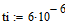
Амплитуда сигнала:
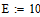
Циклическая частота сигнала:
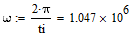
Решение:
Исходный сигнал:
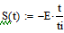
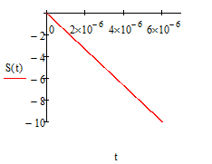
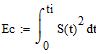
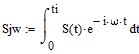
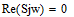
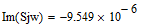
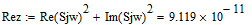
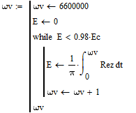
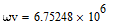
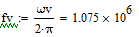
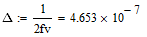
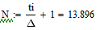
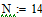
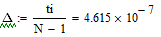
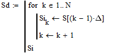
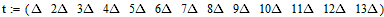
Отсчетные значения исходного сигнала по оси времени: